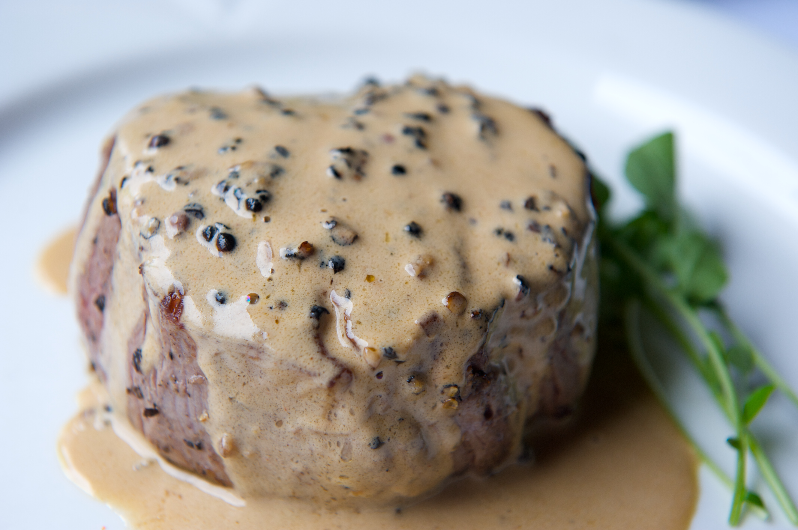

Home
Steak au poivre

Description
Steak au poivre, or pepper steak, is a traditional French dish that consists of a steak coated with coarsely cracked peppercorns.
Ingredients
- 1 tablespoon whole black peppercorns, or more to taste
- 2 (6 ounce) (1 1/4-inch-thick) tenderloin steaks
- 2 tablespoons butter
- 1 tablespoon minced shallot
- 2 tablespoons cognac
- 2 tablespoons red wine
- ¼ cup beef broth
- 2 tablespoons heavy whipping cream
Steps
- Crack peppercorns in a mortar or pestle or with a rolling pin. Press cracked peppercorns into steaks.
- Heat butter in a heavy skillet over medium-high heat. Add steaks; cook, turning with tongs, until browned, about 2 minutes per side. Reduce heat to medium and cook steaks, turning often, until they begin to firm up and are hot and slightly pink in the center, about 5 minutes per side. Transfer steaks to a plate and cover to keep warm.
- Stir shallot into the skillet. Pour in cognac and red wine; simmer, stirring constantly, until reduced, about 2 minutes. Pour in beef broth and simmer, scraping browned bits off the bottom of the skillet, until sauce is smooth, about 2 minutes. Stir in cream; cook until heated through, 1 to 2 minutes.
- Pour cream sauce over steaks.